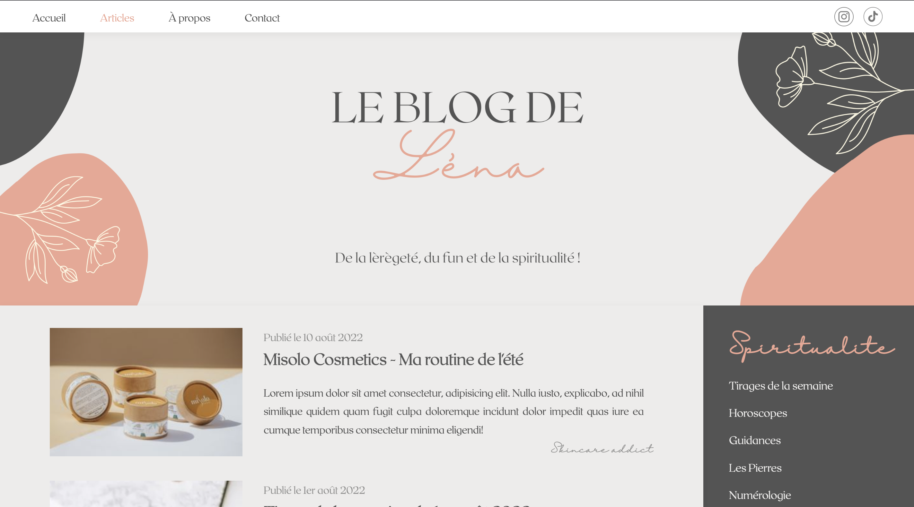

Blog

Le blog de Lena
Dans le cadre de la formation développement web de Grafikart, j'ai suivi le TD Blog de la formation CSS en récréant un univers singulier. Cette landing page est ma première création en développement, réalisée en HTML et CSS. Le site est pensé deskstop et responsive.
J'ai souhaité plonger l'utilisateur dans un monde féminin tout en délicatesse avec des touches de couleurs estivales et joyeuses. Ce blog moderne et épuré, permet de s'imprégner de la personnalité de Léna, inspirée par mes propres centres d'intérets.